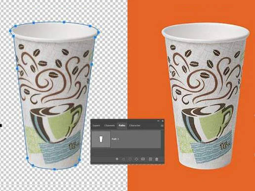
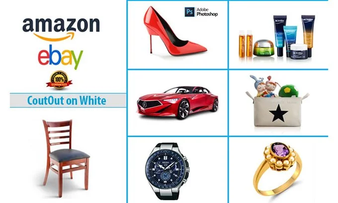
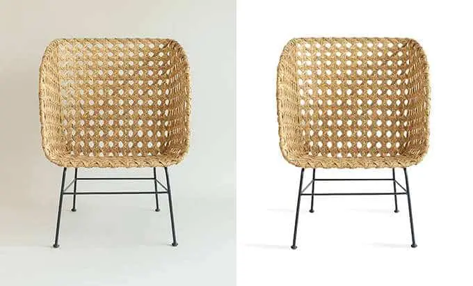

Clipping path services
Carefully hand-drawn clipping paths for crisp, clean photos
Put your product on any background. Take tedious, nitty-gritty photo edits off your plate with outsourced clipping path services.
Starting at $0.39 per image
Get my image edits



Spending all day editing sucks the passion out of your work
You need perfect clipping paths and clean photos to attract customers to your products and make them want what you're selling. But when you're launching hundreds — or even thousands — of products a week, clipping path edits can take days.
You don't have to waste all that time in Photoshop doing edits yourself. And you definitely don't have to stay up too late frantically trying to finish clipping paths on time. We're betting that's not what you signed up for when you started doing this work.
How to know if outsourced clipping path services are right for you
You don't have to do everything yourself. Outsourced clipping path services are ideal if you are…

A busy sports photographer with batches of edits due from a recent event

An ecommerce pro who wants to use your time to move the needle instead of fiddling around in Photoshop

A headshot photographer with tight client deadlines and tons of other deliverables to wrangle
Leave your image edits to the experts

Hand-drawn image clipping paths and careful attention to detail means you get perfect clipping paths and clean photo cut-outs. The cleaner the photos, the more conversions you'll get.
How it works
Order your edits
Upload your images, tell us a bit about what you need, and get a clear, budget-friendly price on the spot.
Your designer edits your images by hand
Our pro designers will tackle those tedious image edits, while you get back to the fun stuff.
Get your images back in as little as 6 hours
We'll double-check your images to make sure they're pixel perfect, and then send them right over.

What are clipping path services?
+ -Clipping paths are the digital way to cut an item out of a photo. Remember cutting out pictures from magazines? It's just like that, only digital. (A tip: if you're cutting out a subject with hair or fur, you probably need image masking — another cutout technique that's used for more intricate edges.)
Once our clipping path specialists finish the clipping path, everything on the inside of the path is included, and everything outside is removed.
Clipping path is also called:
- Image clipping
- Deep etching
- Photo cut-out
- Multi-path
- Multiple clipping paths
- Closed vector path
- Closed vector shape


Clipping path allows you to manipulate the background of the subject of your image. You can create white backgrounds for selling products online, or display your subjects in any setting.
How much do clipping path services cost?
+ -Not all clipping paths are alike, so the rates for each project vary. Every image is different, but we follow standard pricing guidelines to make sure your rate is always clear and objective, even if you're working with a different designer.
Here's an overview of how we price different clipping path projects:
1.Basic Clipping Paths - $0.39 per image
Clipping path allows you to manipulate the background of the subject of your image. You can create white backgrounds for selling products online, or display your subjects in any setting.
At Path, we outline each image by hand. Automatons and AI can lead to Photoshop fails and unhappy customers. Trained (human) graphic designers have the common sense and keen eye to make sure edited photos look just right.


- Simple Box
- Single Glass
- Simple Circle
2.Simple Clipping Paths - $0.69 per image
A simple clipping path is slightly more complex, so it takes a bit more time. Simple clipping paths remove objects that have more edges and curves, like a wine bottle or a car. They also work for objects that have a “hole” in them (like the interior of a mug handle or the inside of a ring or necklace).


- Simple jewellery
- Vehicles
- A simple item of clothing
- Single furniture items
- Other standalone products
3.Medium Clipping Paths - $1.29 per image
A medium clipping path is used for objects with complicated edges. These are typically complex enough that several paths are created and then merged together to get the final result.


- A grouping of simple items
- Shoes
- Items of clothing with more complex shapes and curves
4.Complex Clipping Paths - $2.99 per image
A complex clipping path is applied to objects with very complicated edges, multiple holes, and possibly multiple objects or varied levels of transparency. These types of clipping paths are incredibly time-consuming and call for more advanced skills.


- A grouping of simple items
- Shoes
- Items of clothing with more complex shapes and curves
5.More complex clipping paths - $6.49 per image
This category includes complex clipping paths with additional paths carefully crafted within the product itself.


- Bicycles
- Intricate jewelry
- Wire furniture
- Groupings of products that need color changes in specific areas
6.Super complex clipping paths - $10.99 per image
Sometimes, an object requires so many individual clipping paths that a complex or multiple clipping path just isn't enough. Super complex clipping paths involve three to four different techniques.
This level of detail is necessary for tough product images where nothing else will look natural. In some cases, we need to use super complex, complex, and multiple clipping paths in conjunction with image masking to get to the perfect finished product.


- Furniture with multiple cut-outs
- Objects with netting or mesh
- Jewelry with complex interlinking pieces or chains
- Crates
- Complex machinery
Join thousands of ecommerce entrepreneurs and photographers who trust Path for quality photo edits
Your talent and creative energy are best spent doing what you love—not fiddling in Photoshop for hours figuring out tedious edits.

40,000+
clients have entrusted their image editing needs to us.

8 million+
images enhanced and brought to life.

We don't use automated software here. Every clipping path is carefully done by hand. We're not finished until every item of clothing and accessory appears natural, and the colors and textures look just right.